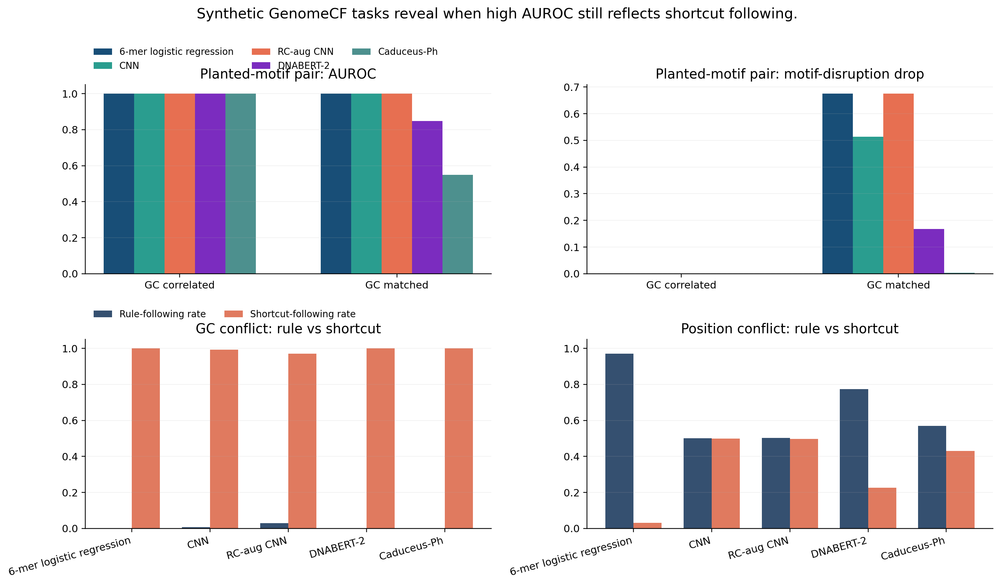

GenomeCF-Synth isolates shortcut mechanisms under known ground truth.
| task_id | task_label | model_id | model_label | seed | auroc | ece | brier | rc_mean_abs_delta | mono_positive_prob_drop | dinuc_positive_prob_drop | motif_positive_prob_drop | shortcut_conflict_accuracy | rule_following_rate | shortcut_following_rate |
|---|---|---|---|---|---|---|---|---|---|---|---|---|---|---|
| gc_conflict | GC shortcut conflict | kmer_logistic_regression | 6-mer logistic regression | 2026 | 0.000 | 0.999 | 0.998 | 0.000 | 0.001 | 0.001 | 0.001 | 0.000 | 0.000 | 1.000 |
| gc_conflict | GC shortcut conflict | small_cnn | CNN | 2026 | 0.000 | 0.992 | 0.991 | 0.009 | 0.001 | 0.002 | 0.001 | 0.008 | 0.008 | 0.992 |
| gc_conflict | GC shortcut conflict | small_cnn_rc_aug | RC-aug CNN | 2026 | 0.000 | 0.968 | 0.966 | 0.013 | 0.000 | 0.000 | 0.000 | 0.029 | 0.029 | 0.971 |
| gc_conflict | GC shortcut conflict | dnabert2 | DNABERT-2 | 2026 | 0.000 | 0.994 | 0.989 | 0.003 | 0.000 | 0.000 | 0.001 | 0.000 | 0.000 | 1.000 |
| gc_conflict | GC shortcut conflict | caduceus_ph | Caduceus-Ph | 2026 | 0.000 | 0.995 | 0.990 | 0.001 | -0.000 | -0.000 | 0.000 | 0.000 | 0.000 | 1.000 |
| two_motif_grammar | Two-motif grammar | kmer_logistic_regression | 6-mer logistic regression | 2026 | 0.585 | 0.358 | 0.379 | 0.460 | 0.079 | 0.069 | -0.013 | 0.564 | 0.564 | 0.501 |
| two_motif_grammar | Two-motif grammar | small_cnn | CNN | 2026 | 0.997 | 0.007 | 0.009 | 0.506 | 0.929 | 0.933 | 0.225 | 0.989 | 0.989 | 0.617 |
| two_motif_grammar | Two-motif grammar | small_cnn_rc_aug | RC-aug CNN | 2026 | 0.995 | 0.012 | 0.010 | 0.018 | 0.788 | 0.784 | 0.161 | 0.988 | 0.988 | 0.618 |
| two_motif_grammar | Two-motif grammar | dnabert2 | DNABERT-2 | 2026 | 0.602 | 0.016 | 0.243 | 0.125 | 0.049 | 0.048 | 0.018 | 0.574 | 0.574 | 0.549 |
| two_motif_grammar | Two-motif grammar | caduceus_ph | Caduceus-Ph | 2026 | 0.548 | 0.014 | 0.249 | 0.051 | 0.001 | 0.002 | 0.002 | 0.539 | 0.539 | 0.526 |
| motif_position_conflict | Motif identity vs position shortcut | kmer_logistic_regression | 6-mer logistic regression | 2026 | 0.981 | 0.028 | 0.029 | 0.041 | 0.896 | 0.885 | 0.818 | 0.970 | 0.970 | 0.030 |
| motif_position_conflict | Motif identity vs position shortcut | small_cnn | CNN | 2026 | 0.534 | 0.481 | 0.485 | 0.016 | -0.006 | -0.009 | -0.002 | 0.500 | 0.500 | 0.499 |
| motif_position_conflict | Motif identity vs position shortcut | small_cnn_rc_aug | RC-aug CNN | 2026 | 0.443 | 0.495 | 0.495 | 0.001 | 0.005 | 0.001 | 0.003 | 0.502 | 0.502 | 0.497 |
| motif_position_conflict | Motif identity vs position shortcut | dnabert2 | DNABERT-2 | 2026 | 0.854 | 0.061 | 0.160 | 0.188 | 0.240 | 0.194 | 0.177 | 0.774 | 0.774 | 0.226 |
| motif_position_conflict | Motif identity vs position shortcut | caduceus_ph | Caduceus-Ph | 2026 | 0.602 | 0.007 | 0.242 | 0.108 | 0.005 | -0.002 | 0.002 | 0.570 | 0.570 | 0.430 |
| gc_correlated | GC correlated | kmer_logistic_regression | 6-mer logistic regression | 2026 | 1.000 | 0.000 | 0.000 | 0.000 | 0.000 | 0.000 | 0.000 | 1.000 | 1.000 | 1.000 |
| gc_matched | GC matched | kmer_logistic_regression | 6-mer logistic regression | 2026 | 1.000 | 0.005 | 0.000 | 0.003 | 0.946 | 0.927 | 0.675 | 1.000 | 1.000 | 0.500 |
| gc_correlated | GC correlated | small_cnn | CNN | 2026 | 1.000 | 0.000 | 0.000 | 0.001 | 0.000 | 0.000 | 0.000 | 1.000 | 1.000 | 1.000 |
| gc_matched | GC matched | small_cnn | CNN | 2026 | 1.000 | 0.095 | 0.053 | 0.082 | 0.772 | 0.731 | 0.514 | 0.920 | 0.920 | 0.420 |
| gc_correlated | GC correlated | small_cnn_rc_aug | RC-aug CNN | 2026 | 1.000 | 0.000 | 0.000 | 0.000 | 0.000 | 0.000 | 0.000 | 1.000 | 1.000 | 1.000 |
| gc_matched | GC matched | small_cnn_rc_aug | RC-aug CNN | 2026 | 1.000 | 0.003 | 0.001 | 0.003 | 0.951 | 0.933 | 0.675 | 1.000 | 1.000 | 0.499 |
| gc_correlated | GC correlated | dnabert2 | DNABERT-2 | 2026 | 1.000 | 0.004 | 0.000 | 0.002 | 0.001 | 0.001 | 0.001 | 1.000 | 1.000 | 1.000 |
| gc_matched | GC matched | dnabert2 | DNABERT-2 | 2026 | 0.848 | 0.086 | 0.166 | 0.165 | 0.254 | 0.207 | 0.168 | 0.772 | 0.772 | 0.537 |
| gc_correlated | GC correlated | caduceus_ph | Caduceus-Ph | 2026 | 1.000 | 0.004 | 0.000 | 0.000 | -0.000 | -0.000 | 0.000 | 1.000 | 1.000 | 1.000 |
| gc_matched | GC matched | caduceus_ph | Caduceus-Ph | 2026 | 0.549 | 0.007 | 0.248 | 0.033 | 0.003 | -0.001 | 0.003 | 0.531 | 0.531 | 0.500 |
